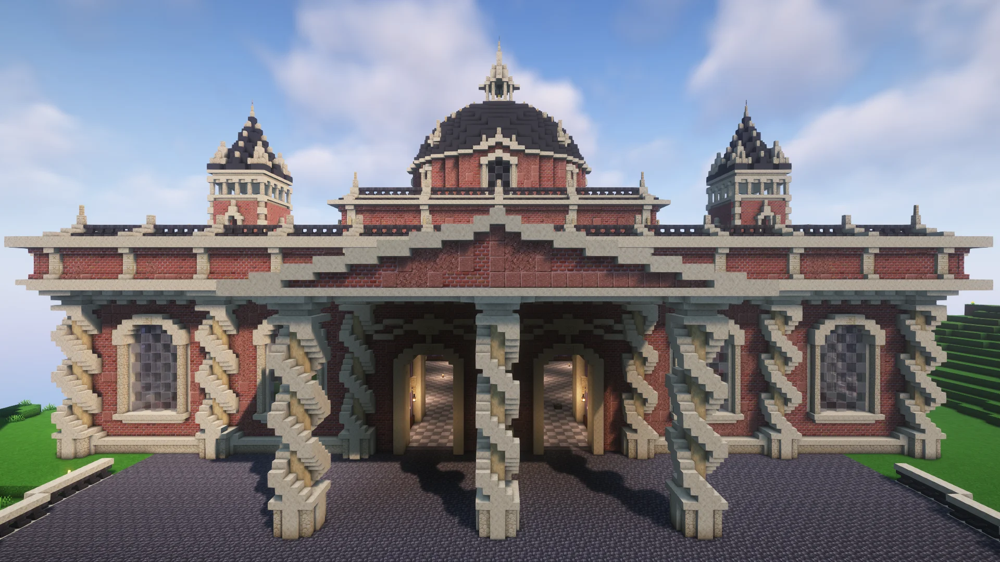

The Season III Shopping District
With the location of the shopping district having been chosen even before the season began the first shops got constructed as early as the first week of the server.
Nowadays the shopping district is home to many different shops offering goods like wood and food or different services!
Naturally some of Minelifes most impressive builds and ambitious mega projects have been built in or around the shopping district...
Builds:
Shops:
-Shulker Shop
-Cyberpunk Services Shop
-Red Pet Shop
-Armortrimm Shop
-Totem Shop
-Wood Shop
-Slime and Prismarine Shop
-Copper Shop
-Netherite Shop
(-Book Shop)
-Seynox Shop
